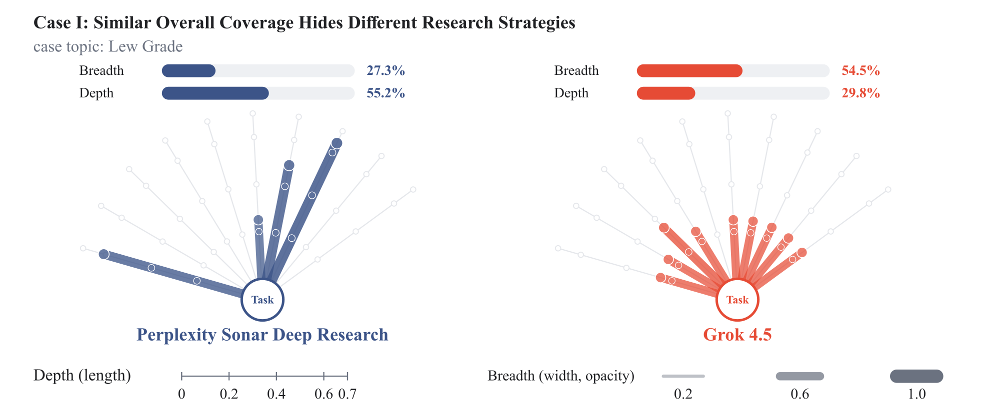
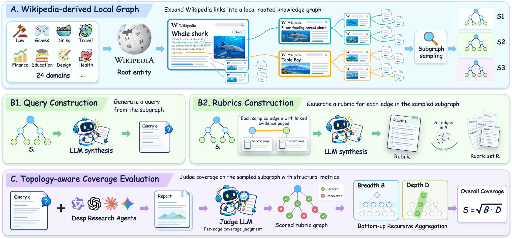
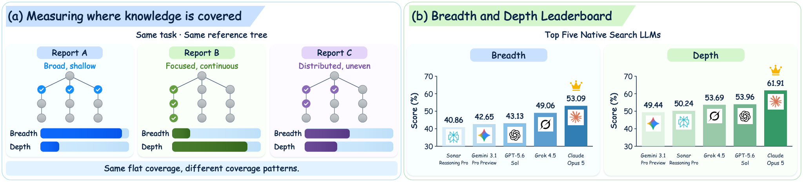
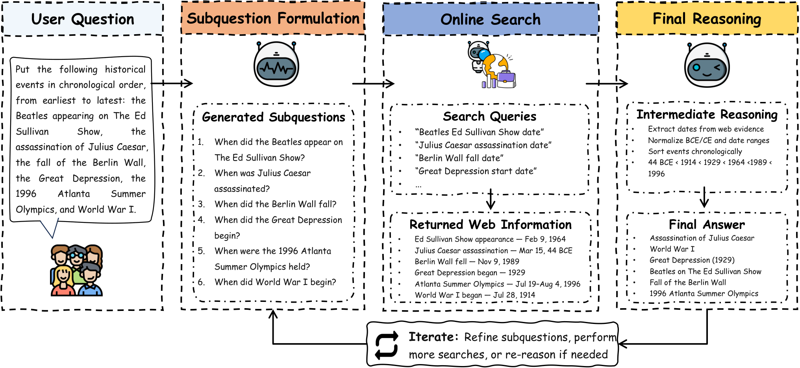
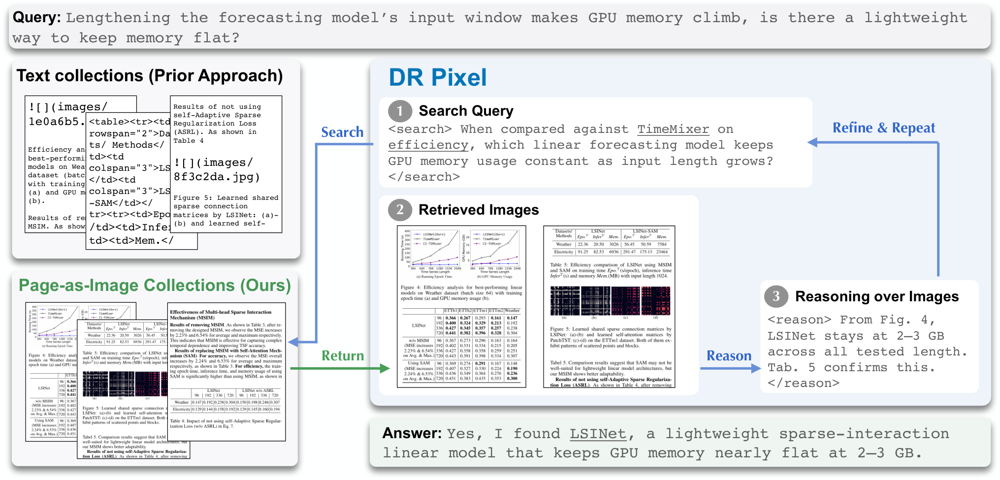
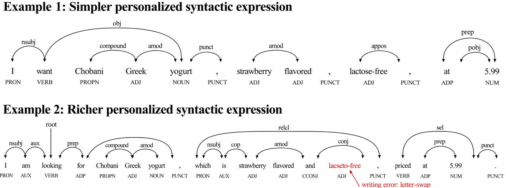

目录 · 4 节
1两份深度研究报告总分几乎打平，一份铺得很开，一份挖得很深：DRBench Pro 怎么把这两种覆盖拆开看2问题和评分项从同一张子图里长出来3广度均摊方向，深度奖励连续的关系链4同一套题上，广度和深度会排出不同名次两份深度研究报告总分几乎打平，一份铺得很开，一份挖得很深：DRBench Pro 怎么把这两种覆盖拆开看
先看一道题：调研英国娱乐大亨 Lew Grade，梳理他怎么从电视转向七十年代的国际大片，融资上的判断怎么带来成功与惨败，又怎么在失控之后被收购。这是一道开放研究题，没有标准短答案。
Perplexity Sonar Deep Research 的总体覆盖是 38.83%，Grok 4.5 是 40.31%，几乎打平。但两份最终报告的覆盖形态差得很远：前者广度只有 27.33%，深度拉到 55.19%，少数方向被覆盖得很深；后者广度 54.48%，深度只有 29.82%，十条主方向铺得更开，每条关系链都覆盖得偏浅。这说明，总体覆盖接近，并不等于报告在参照树上的覆盖形态相同。这些数字来自报告盖没盖住树上的关系，不能直接当成代理实际怎么检索、怎么写的路径。
现有深度研究评测很难看到这层差别。事实性检查能揪出没依据的句子，却管不了该写却漏掉的知识。后来一些基准改用专家报告或自动生成的评分项来衡量写全了没有，可条目一摊平加总，就分不清报告是铺开了更多研究方向，还是顺着挑出来的方向把关系链挖深了。
浙江大学与腾讯做的 DRBench Pro，就是冲着这个盲区去的。它从维基百科上的实体出发，长出一棵局部知识树，切出子图，同时生成研究问题和一套隐藏评分项。每条评分项对应树上的一条关系，挂着维基百科里的证据。被测代理只看得到问题，看不到这棵树。评测时先判每条关系在报告里盖没盖住，再自底向上分别算广度和深度，取两者的几何平均当总体覆盖。整套基准横跨 24 个领域、144 道题，一共 44,102 条评分项。测完 16 个深度研究代理，排第一的 Claude Opus 5，总体覆盖也只拿到 57.04%。
总体覆盖接近，并不等于报告的覆盖形态相同。这个基准把知识覆盖当作主指标，依据的是最终报告盖没盖住参照树上的关系，参照空间是维基百科上最多三跳的知识树。

问题和评分项从同一张子图里长出来
要评一份报告写全了没有，得先界定什么算相关知识，以及这些知识彼此怎么连着。DRBench Pro 直接用 WebOrganizer 的 24 个主题类别，每类挑两个根实体，凑出 48 个根。从每个根顺着维基百科链接做广度优先扩展，最多走三跳，再理成有根树。根下面最多留 50 个子节点，其余节点最多留 5 个，邻居由 Claude Opus 4.8 按相关性和研究价值来筛。这 48 棵树建完，平均大约一千五百个节点。
拿整棵树去对应一次研究请求太大了，于是每棵树再切出三张互不重叠的子图。每张子图留着根和 10 条完整的一级分支，这样一个根出 3 道题，总共 144 道。每条分支代表一个研究方向，分支里的路径就是相关知识链。单张子图平均大约三百条边，也就是大约三百条评分项，其中八成落在第三跳。不过后面汇总会在每一层做归一化，深层条目多，并不自动等于权重大。
问题和评分项由同一张子图生成。写问题时要求贴着主题写成自然的研究请求，不把隐藏实体列成清单。保留下来的每条关系边生成一条评分项，核对报告有没有讲清这对实体之间的关系。生成时只用页面摘要、锚句和相关段落，不凭空加没有依据的要求。评测时代理只收到问题，树和评分项全藏在后面。全部题目都经人工过了一遍，确认有研究价值且公开可答；抽查查询与实体的对照，也确认漏进题面的实体标题很少，而且都不在第一跳。

广度均摊方向，深度奖励连续的关系链
如果只把命中的评分项简单数一遍，覆盖形态差得很远的两份报告，照样能拿到接近的分。汇总时不能把树拆平，得留着结构来算。正式评测里，Gemini 2.5 Pro 给每条隐藏评分项打三种结论：Satisfied、Partially Satisfied 或 Not Satisfied。进到广度和深度计算时，只认 Satisfied 算已覆盖，后两种都记为未覆盖。
广度看的是主要研究方向铺得有多开。十条一级分支等权，防止条目特别多的分支把分抢走。单条分支内部，当前关系的覆盖和子树的平均广度按
B(v) = 0.60 · x(v) + 0.40 · mean_child_breadth
加权；中间缺了一层关系，后代照样能把一部分覆盖往上带。
深度看的是相关知识链能走多远。只要有链挖得够深，就够说明深度，不要求每条分支都同样深。子树按已经实现的深度从高到低加权平均——深的链权重大，浅的链也留着一部分分量。当前关系本身计分，同时卡着后代还能计入多少分：中间关系没盖住时，后代按 0.75 折算，不直接清零。非叶节点的深度是
D(v) = 0.25 · x(v) + 0.75 · d(v) · [0.75 + 0.25 · x(v)]
这里的 d(v) 就是按深度从高到低加权汇总出来的子树值。各方向之间套用同一套算法，得到整道题的深度。总体覆盖取广度和深度的几何平均：S = √(B · D)。哪一维偏弱，总分都会被拉下来。
按默认参数做个示意手算：假设根下面只有一条链，三个节点依次是 A、B、C。如果写到了 A 和 C、漏掉中间的 B，深度约为 0.672，广度为 0.76；如果写到了 A 和 B、没写到叶子 C，深度约为 0.438，广度为 0.84。摊平了数，两种写法都是三条关系里中了两条；放到树上算，前者更像「跳过中间环节却摸到了更远的点」，后者更像「顺着链走了两步、没走到头」。

同一套题上，广度和深度会排出不同名次
把 16 个代理放进这套指标里看，名次并不是一条线排下来的。Claude Opus 5 在总体覆盖、广度和深度三项都是第一，分别为 57.04%、53.09% 和 61.91%。后面的位次就分化了：Grok 4.5 相对更强在广度，o3 Deep Research 相对更强在深度。想把总体覆盖做上去，两头都得跟上。
| 代理 | 总体覆盖 | 广度 | 深度 |
|---|---|---|---|
| Claude Opus 5 | 57.04 | 53.09 | 61.91 |
| Grok 4.5 | 50.98 | 49.06 | 53.69 |
| o3 Deep Research | 49.45 | 45.77 | 54.32 |
| Qwen3.8 Max（本地框架） | 47.94 | 46.62 | 50.37 |
| GPT-5.6 Sol | 47.80 | 43.13 | 53.96 |
| Perplexity Sonar Deep Research | 46.06 | 40.00 | 54.08 |
| Qwen3.8 Max（原生搜索） | 36.53 | 31.08 | 44.09 |
| Gemma 4 31B（本地框架） | 32.00 | 30.43 | 34.82 |
同一名字的模型，换一套研究工作流，画像也会变。Qwen3.8 Max 放进本地研究框架后，广度比它自己的原生搜索配置高出 15.54 个百分点，深度高 6.28 个百分点，拉开的差距主要在广度。这套本地框架把检索语料冻在同一份英文维基百科快照上，工具接口、工作流和预算全固定下来，用来比较不同骨干模型自己怎么拆任务、怎么选证据。
换到领域维度，差距一样大。跨代理取平均，总体覆盖最高的是软件开发，到 53.69%；工业垫底，只有 28.58%。Claude Opus 5 在 23 个领域里领先，文学领域是 o3 Deep Research 领先。
搜得更勤、写得更长，也不自动等于覆盖更高。自动餐厅品牌 Horn & Hardart 这道题上，两个骨干模型共用冻结语料和同一套预算，GLM 5.2 翻了更多页面、成稿也更长，总体覆盖却只有 29.19%；DeepSeek V4 Flash 动作少得多，总体覆盖反而到了 45.54%。
| 代理 | 检索页数 | 报告词数 | 总体覆盖 |
|---|---|---|---|
| GLM 5.2 | 112 | 2,214 | 29.19 |
| DeepSeek V4 Flash | 43 | 1,372 | 45.54 |
检索阶段已经完全盖住的评分项，落到成稿里还会丢掉将近一半，而且跳数越远，留下的越少。缺口不一定出在找不到，也可能是在写进报告时被压缩掉了。
这套指标和专家判断的方向是一致的。在 72 份报告上，总体覆盖与专家打分的 Kendall 相关是 0.751，Spearman 相关是 0.833，都高于把评分项直接摊平加总的结果。落到评分项级别，Gemini 2.5 Pro 与人工标签的二分类 Macro-F1 是 0.893。调动汇总参数，16 个代理的排序也大体稳得住。不过换用 Kimi K2.6 重建其中 10 道题的树、查询和评分项后，Claude Opus 5 虽然还在抽样模型里排第一，绝对分数却明显掉了下来。覆盖分数依附于这棵被构造出来的参照树，换一种建法，刻度就会跟着挪。
读完这篇，你觉得
夜读鸮记下了，谢谢你的反馈。
点一下即可，无需登录；再点一次撤回。只统计匿名次数，不记录你是谁。
相关论文RELATED

Retrieval · 2026-11-05EMBERS: Empirically Motivated Robustness Testing of Deep Research Systems via Defect-Guided FuzzingDeep Research 系统会把问题拆成子问题、反复上网搜索、再汇总作答，问法稍一变化，前面的小偏差就可能一路传下去，最后答错。作者分析了三个系统的 1,932 条执行轨迹，归纳出九类反复出现的缺陷，分布在拆子问题、在线搜索和最终推理三个阶段。作者据此做了测试框架 EMBERS，它从系统本来答对的问题出发，针对这些缺陷改写问题或中间的搜索输入，同时核对改写后问的还是同一件事。在同样 24 小时的测试预算下，它找出的失败用例是最强基线的 3.21 倍。测试中产生的执行轨迹拿去微调，还能让模型的回答更一致。
Retrieval · 2026-11-04DR Pixel: Page-Native Deep Research with Vision-Language Models让模型查论文时直接看页面截图，而不是先把 PDF 转成文字再搜，问答准确率会更高，检索次数还更少。DR Pixel 把约 106 万张论文页面渲染成图，每张图编码成一个向量。智能体用文字发起搜索，拿回最相关的几张页面图，并在整个推理过程中一直看着这些原图，表格和曲线不会因为转文字而走样。不做任何训练，只是换成看页面，闭源和开源的三个模型都比转成文字再另加一个搜图工具的方式准确率高 5 个点以上，检索调用少 20% 到 30%。 Retrieval · 2026-11-04WeSearch: A Unified Model-Centric Retrieval Framework for WeChat Search微信搜索的 WeSearch 用一个模型替掉了原来并行的多路召回：先按 query 找出相关的文档簇，再在这些簇里逐篇给文档打相关分，把粗筛和精细判断分开。它不像生成式检索那样给每篇文档一个固定的层级 Semantic ID，那种做法默认一篇文档只走一条语义路径，可一篇文章常常同时讲好几件事。索引可以增量更新，模型从原来的每月更新变成每周、必要时每天刷新。它已作为微信搜索的主召回上线，一个月全量 A/B 里 CTR 提升 0.68%，检索资源成本降了 41%。多取一些簇来保召回，谁更相关交给逐篇打分。
Retrieval · 2026-11-04WeSearch: A Unified Model-Centric Retrieval Framework for WeChat Search微信搜索的 WeSearch 用一个模型替掉了原来并行的多路召回：先按 query 找出相关的文档簇，再在这些簇里逐篇给文档打相关分，把粗筛和精细判断分开。它不像生成式检索那样给每篇文档一个固定的层级 Semantic ID，那种做法默认一篇文档只走一条语义路径，可一篇文章常常同时讲好几件事。索引可以增量更新，模型从原来的每月更新变成每周、必要时每天刷新。它已作为微信搜索的主召回上线，一个月全量 A/B 里 CTR 提升 0.68%，检索资源成本降了 41%。多取一些簇来保召回，谁更相关交给逐篇打分。 Retrieval · 2026-11-19MIPR: A Benchmark for Reasoning-Intensive Multimodal Intent-to-Product Retrieval with Multi-Category Solutions真实电商查询常常只说出购买或使用意图、并不点名具体商品，而且同一意图可能由多个类目的商品来满足，现有多模态检索基准却多半假定目标已经比较明确。一份面向意图到商品检索的基准给出 3,522 条多模态查询和共享的 30,731 件商品语料，强调需要推理的检索、多类目解决方案，以及细粒度相关标注。最强的基于向量的检索器在全部查询上的十分位排序质量为 49.23%，经过重排后升到 60.11%，但离候选池上界仍有明显差距。这说明，意图清楚却不指向单一类目时，检索系统还远谈不上已经解决，基准本身更适合用来诊断，而不是只报一个总分。
Retrieval · 2026-11-19MIPR: A Benchmark for Reasoning-Intensive Multimodal Intent-to-Product Retrieval with Multi-Category Solutions真实电商查询常常只说出购买或使用意图、并不点名具体商品，而且同一意图可能由多个类目的商品来满足，现有多模态检索基准却多半假定目标已经比较明确。一份面向意图到商品检索的基准给出 3,522 条多模态查询和共享的 30,731 件商品语料，强调需要推理的检索、多类目解决方案，以及细粒度相关标注。最强的基于向量的检索器在全部查询上的十分位排序质量为 49.23%，经过重排后升到 60.11%，但离候选池上界仍有明显差距。这说明，意图清楚却不指向单一类目时，检索系统还远谈不上已经解决，基准本身更适合用来诊断，而不是只报一个总分。 Retrieval · 2026-11-12FERN: Cross-Benchmark Table Retrieval for Text-to-SQL with Frozen Retrievers and Learned RankingText-to-SQL 面对几百张表的大目录，第一步是把问题要用到的表找出来，现在流行让大模型读 schema 来挑。FERN 的检索链路里没有任何生成式大模型：三个现成的检索器各自召回，合并成候选池，每张候选表算一大批特征，再用只在 BIRD 训练集上训过一次的 LightGBM 排序。换到没训过的 Spider 上，前五张表就把所需表全部找齐的问题比例从 83.9% 提到 95.6%，前五张表的召回和调用 Claude 的 RASL 只差不到一个点。在 BIRD 上每个问题的中位延迟约 208 毫秒，也不用把 schema 发给外部服务。短板同样明显：BIRD 不给提示信息时落后不少，Fiben 上差得更远。
Retrieval · 2026-11-12FERN: Cross-Benchmark Table Retrieval for Text-to-SQL with Frozen Retrievers and Learned RankingText-to-SQL 面对几百张表的大目录，第一步是把问题要用到的表找出来，现在流行让大模型读 schema 来挑。FERN 的检索链路里没有任何生成式大模型：三个现成的检索器各自召回，合并成候选池，每张候选表算一大批特征，再用只在 BIRD 训练集上训过一次的 LightGBM 排序。换到没训过的 Spider 上，前五张表就把所需表全部找齐的问题比例从 83.9% 提到 95.6%，前五张表的召回和调用 Claude 的 RASL 只差不到一个点。在 BIRD 上每个问题的中位延迟约 208 毫秒，也不用把 schema 发给外部服务。短板同样明显：BIRD 不给提示信息时落后不少，Fiben 上差得更远。
Retrieval · 2026-10-26PersonalQuery-Benchmark:Evaluating Retrieval Robustness to Personalized User Expression Differences两个用户想买同一件商品，一个写“我要草莓味、无乳糖的希腊酸奶”，另一个写“我在找一款希腊酸奶，它是草莓味的，而且无乳糖”，还顺手把一个词拼错了，搜索结果会一样吗？这篇论文用亚马逊三个品类的真实用户评论做了一个基准 PQB，专门测同一需求换种说法后结果稳不稳。核心商品词完全相同、只改句子结构时，在至少有一条查询把目标商品排第一的查询对里，有约 27% 到 52% 的情况另一条没排进第一。按用户自己的打字习惯加入拼写错误后，前 20 条的命中率最多降低 12.3 个百分点。整体效果更好的模型不一定更稳。
讨论
欢迎补充实验细节、复现经验或不同看法。需 GitHub 登录。
正在加载讨论…